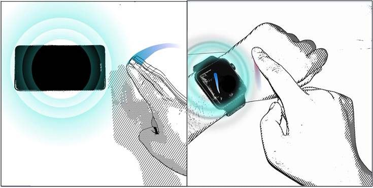
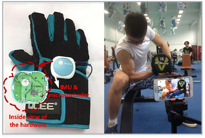

Yongpan Zou (邹永攀)Assistant Professor |
[Biography] [Research] [News] [Publications] [Services] [Group] [Teaching]
Biography
I am currently an Assistant Professor in the College of Computer Science and Software Engineering of Shenzhen University, since September 2017. I obtained my Ph.D in February 2017 in the CSE Department of HKUST, under the supervision of Professor Lionel M. Ni. Prior to this, I received my B.E in School of Chemical Engineering and Technology, Xi'an Jiaotong University in July 2013.
For more information about me, please refer to my CV here [CV_cn].
Research Interests
My research interest covers Wearable and Mobile Computing, Human-computer Interaction and Ubiquitous computing. My vision is to develop new technologies, algorithms, and systems that enable smart sensing, provide intelligent services, and deliver novel applications. I draw on novel sensing & computing technologies with embedded system design, machine learning models, signal processing algorithms, and mathematical methods to solve real-world problems. I am now leading Intelligent Perception and Mobile Computing Group.
Academic News
2020/08, our paper “What You Wear Know How You Feel: An Emotion Inference System with Multi-modal Wearable Devices” is accepted by Mobicom 2020 as a poster paper. The first author is a master student under my supervision.
2020/07, our paper “I am smartglasses, and I can Assist Your Reading” has been accepted by IEEE ICA3PP 2020. The first author is a master student under my supervision.
2020/06, I am invited to be PC member of IEEE MSN 2020 workshop 1st International Workshop on Mobile Sensing with Radio, Light, and Acoustic (MSRLA). Welcome to submit your papers!
2020/03, our paper “A Low-Cost Smart Glove System for Real-time Fitness Coaching” has been accepted by IEEE Internet of Things Journal.
2020/02, our paper “EchoWrite: An Acoustic-based Finger Input System Without Training” (extension of the ICDCS paper) has been accepted by IEEE TMC.
2020/01, Our paper “SilentSign: Touch-free Handwritten Signature Verification through Acoustic Sensing” has been accepted by IEEE PerCom 2020 with an acceptance rate of ~16%.
Selected Publications [Full List]
* indicates the Corresponding Author; AR is short for Acceptance Rate
Conference Papers
 |
[PerCom’20] SilentSign: Device-free Handwritten Signature Verification through Acoustic Sensing
|
|  | [ICDCS’19] EchoWrite: An Acoustic-based Finger Input System Without Training
|
[PerCom’19] AcouDigits: Enabling Users to Input Digits in the Air
|
[Ubicomp’18] BiLock: User Authentication via Dental Occlusion Biometrics
|
Journal Papers
|  | [IoT-J] A Low-Cost Smart Glove System for Real-time Fitness Coaching
|
[TMC] EchoWrite: An Acoustic-based Finger Input System Without Training
|
[COMMAG] Wi-Fi Radar: Recognizing Human Behavior with Commodity Wi-Fi
|
[TMC] GRfid: A Device-Free RFID-Based Gesture Recognition System
|
Workshop/Poster/Demo/Others
[Mobicom’20] What You Wear Know How You Feel: An Emotion Inference System with Multi-modal Wearable Devices
|
[MobiSys’18] A Novel Finger-Assisted Touch-free Text Input System Without Training
|
[CCCF] 面向新型智能设备的交互技术
|
Professional Services
TPC Member for
UIC 2020, MSN 2020, HPCC 2020, UIC 2019, Globecom 2018, VTC 2018-Spring, Globecom 2017, ICPADS 2017
Reviewer for
ACM IMWUT, IEEE TMC, IEEE COMMAG, ACM/IEEE ToN, PMC, ICPADS 2016, Ubicomp 2016, Globecom 2017
Chairing service
Publication chair of ICPADS 2017, ICPADS 2018 and ICPADS 2019
Program vice chair of PCC 2019
Group Members
PG Students
Dan Wang, Baojie Yuan: sicne 2018
Shicong Hong, Haibo Lei, Zhihong Xiao: since 2019
UG Students
Jialu Dai, Zijian Pan: since 2018
Qihui Guan, Huabin Li, Wenting Fang, Jinyuan Liu, Zishuo Guo: since 2019
Yunshu Wang, Zitao Wang, Songjia Yang, Xiaomei Wang, Wenxing Tang: since 2020
Alumni
Yetong Han, Jiawei Lin, Hongrui Fu, Qianru Liao, Yuming Yang, Sicheng Wu, Ziyin Wang, Yuhang Li: since 2017
Qiang Yang, Meng Zhao: since 2016
Weifeng Liu, Shufeng Ye, Changsheng Zhou, Junjun Bao, Xuejin Zhou, Jingchuan Xu, Zehui Zheng, Jinyong Wu: since 2015
Selected Teaching Achievements
{kind=link}
{kind=link}
{kind=link}
{kind=link}
{kind=link}
{kind=link}
{kind=link}
{kind=link}